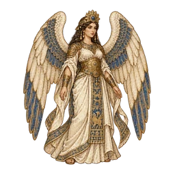

點畫面繼續
從哪裡進入台地？
選一條路，或直接點地圖上發亮的區塊。
點一下繼續 ▸

BABYLON CHRONICLE · THE SIX-STONE SWORD
巴比倫戰記
聖劍折斷，六色石散落四方。地心的王醒了，巴別塔正等著重新長回天上。
一支小小的隊伍，要把石頭一顆一顆奪回來。
玩法說明
操作
- 輪到你的角色時，鏡頭會自動靠過去。點藍色地面移動，點紅框的魔物攻擊。
- 下方四顆按鈕：技能、道具、說服（只有輔助會）、結束行動。
- 手指左右拖曳旋轉戰場，兩指縮放。電腦上可以按 Q／E 旋轉、滾輪縮放。
地形
- 站得比對手高，物理攻擊更痛（每高一階 +10%）。太陡的地方上不去，淺灘要多花一步。
- 石柱擋路，也擋住遠程魔法。從側面打 +15%、從背後打 +30%，腳下的小三角形是面對的方向。
六屬性
- 水 → 火 → 風 → 地 → 水（箭頭指向被剋的一方）；光 ⇄ 闇 互剋。
- 每個角色名字和數值前面的水滴，顏色就是牠的屬性。
說服
- 只有輔助能說服魔物，站在 2 格內就可以。頭目不會被說服。
- 魔物越虛弱、等級差越大、屬性越合（同屬性最好），越容易答應。先送一顆「野果」也有幫助。
THE PARTY
誰跟你一起去？
魔物夥伴
WORLD MAP · 東方諸國
巴比倫以東